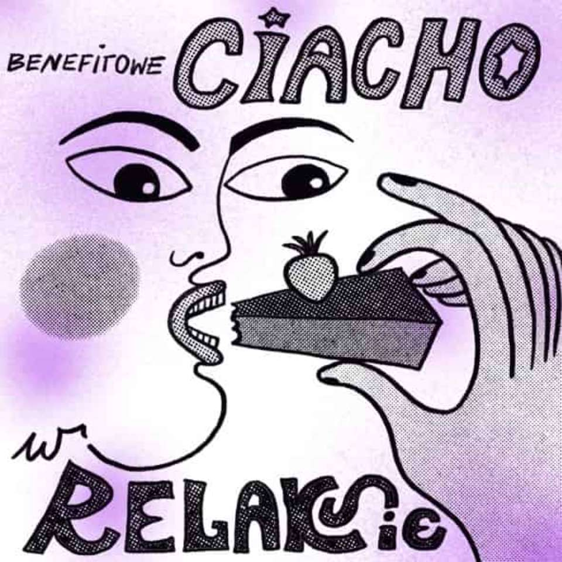
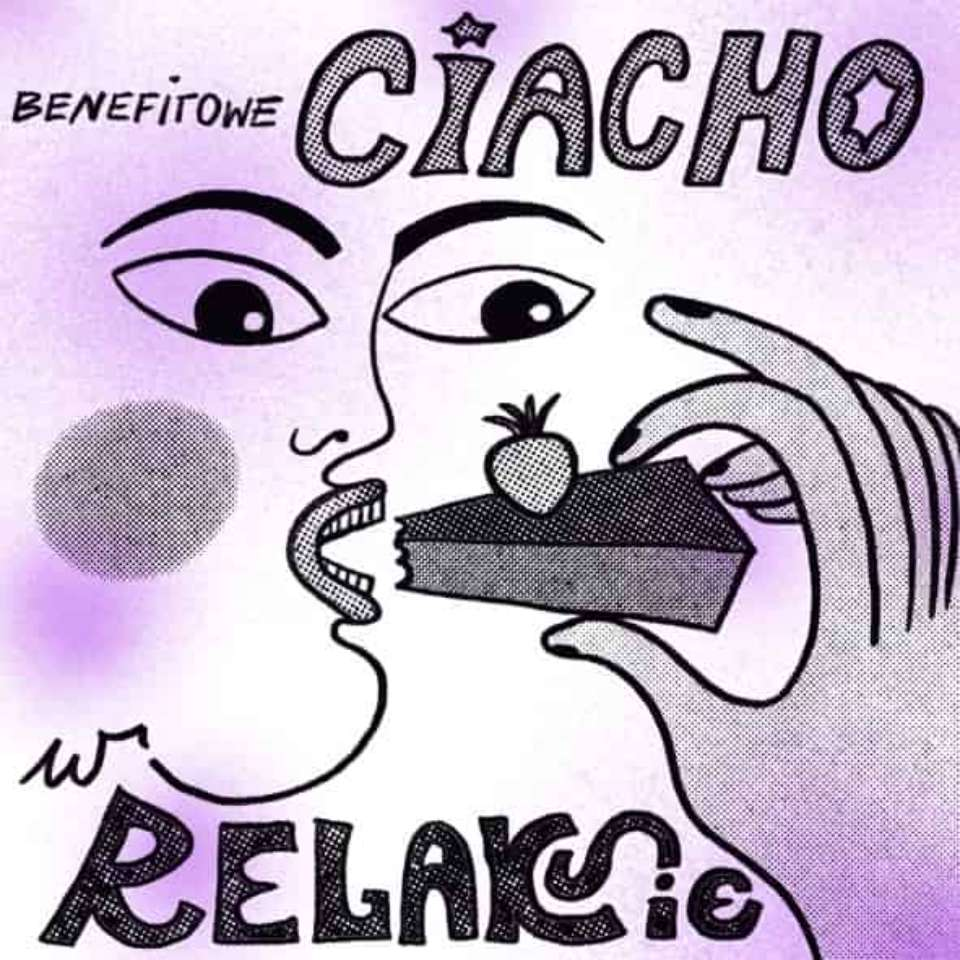
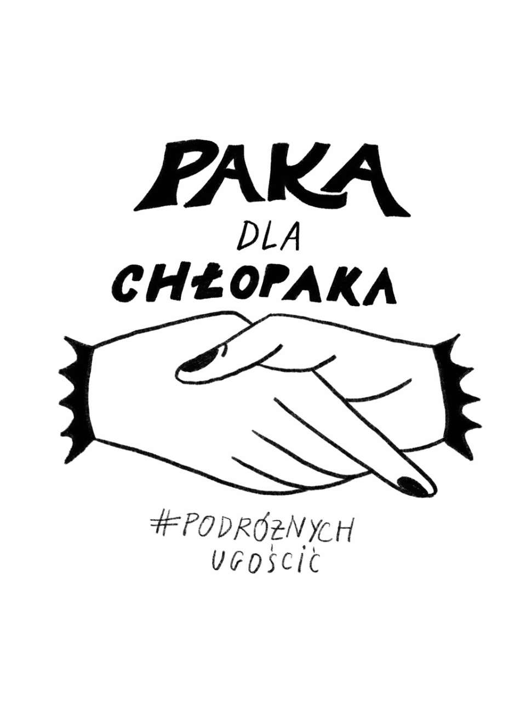
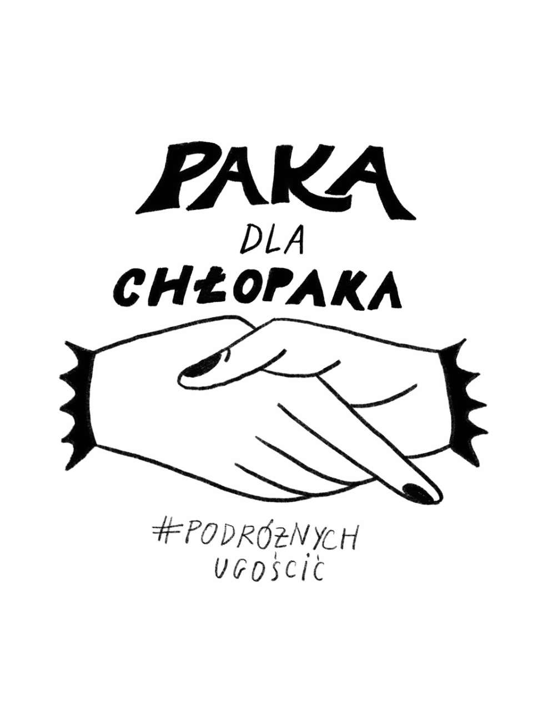

Nasze działania rozpoczynaliśmy jako grupa przyjaciół jeżdżących pomagać na granice polsko-białoruską. Od lutego 2022 roku działamy jako Stowarzyszenie Podróżnych Ugościć.
Od października 2021 roku jako grupa przyjaciół jeździliśmy na tereny położone przy polsko-białoruskiej granicy w celu niesienia pomocy humanitarnej osobom uchodźczym.
Kolejnym etapem naszych działań było wspieranie osób przebywających w Strzeżonych Ośrodkach dla Cudzoziemców. W grudniu, jeszcze jako nieformalna grupa Podróżnych Ugościć, zorganizowaliśmy za pomocą mediów społecznościowych trwającą pół roku akcję, polegającą na przygotowywaniu przez prywatne osoby z całej Polski paczek dla ludzi przebywających w ośrodkach zamkniętych. Zależało nam zmniejszeniu dystansu między pomagającymi a osobami w ośrodkach, dlatego każdy kompletujący paczkę znał imię, wiek i indywidualne potrzeby wspieranej osoby. Wolontariuszki i wolontariusze, których zaprosiliśmy do współpracy, sprawdzali, czy paczka jest kompletna i zgodna z wytycznymi danego ośrodka. Wspólnie z zaangażowanymi w akcję osobami udało nam się przygotować ponad tysiąc dostosowanych do indywidualnych potrzeb paczek.
W tym czasie, oprócz koordynowania działań mających na celu zapewnienie podstawowych, materialnych potrzeb osób znajdujących się w ośrodkach, zajmowaliśmy się także organizowaniem pomocy prawnej, medycznej i psychologicznej. Inicjowaliśmy protesty i nagłaśniałyśmy sprawy w mediach – dzięki naszej inicjatywie udało się wydostać z ośrodków zamkniętych conajmniej piętnaście osób.
W lutym 2022 roku postanowiliśmy sformalizować naszą działalność i założyliśmy stowarzyszenie Podróżnych Ugościć. Obecnie skupiamy się na wspieraniu osób, które, po wielu miesiącach spędzonych w Strzeżonych Ośrodkach dla Cudzoziemców, zdecydowały się osiedlić w Polsce. Zależy nam żeby osoby, którym pomagamy jak najszybciej się usamodzielniły i odzyskały poczucie sprawczości. Najczęstsze formy asysty, jakie oferujemy, to pomoc w znalezieniu pracy, szkoły lub kursów językowych i zawodowych oraz mieszkania.
W czasie pobytu w ośrodku strzeżonym (który trwa od sześciu do dwunastu miesięcy) nikt nie ma możliwości podjęcia pracy. W związku z tym duża część osób opuszczających ośrodki strzeżone nie ma środków niezbędnych do rozpoczęcia samodzielnego życia. Dlatego staramy się zapewnić im wsparcie finansowe polegające m.in. na opłaceniu kaucji za mieszkanie, biletów komunikacji publicznej, badań lekarskich i dokumentów potrzebnych do pracy. Dzięki tej formie wsparcia (jak dotąd) kilkanaście osób wynajęło pokoje lub mieszkania i rozpoczęło pracę.
Jesteśmy także zaangażowani w pomoc Ukrainkom i Ukraińcom. Razem z Grupą Granica i organizacją Chlebem i Solą organizujemy regularne przejazdy autokarowe pomiędzy Lwowem a Polską – w wyniku tej współpracy udało się do tej pory ewakuować ponad jedenaście tysięcy osób. W październiku tego roku razem z Chlebem i Solą rozpoczęliśmy akcję „Ruszamy na wschód” - czyli zbiórkę ubrań zimowych, które dostarczamy do Ukrainy, gdzie nasi lokalni partnerzy przekazują je najbardziej potrzebującym. Część ubrań zawozimy także na polskie pogranicze, gdzie w lasach przy granicy z Białorusią wciąż przebywają ludzie. Możliwe jest również przekazanie wpłaty na nasze konto - pozyskane fundusze przeznaczymy na zakup brakujących produktów - przede wszystkim bielizny termicznej. Informacje dotyczące zbiórki można znaleźć na naszych mediach społecznościowych.

 


 



Uważamy, że kluczowym w tym momencie zadaniem jest uwzględnienie w społecznej debacie o migracji i kryzysie humanitarnym na granicy głosów osób uchodźczych. Dlatego jako Podróżnych Ugościć dążymy do włączenia uchodźczyń i uchodźców w działania stowarzyszenia – zapraszamy ich do współprowadzenia mediów społecznościowych, gdzie mogą podzielić się swoimi doświadczeniami i przemyśleniami. Docelowo chcielibyśmy stworzyć w stowarzyszeniu miejsca pracy dla osób uchodźczych.
W najbliższym czasie zamierzamy stworzyć kompleksowy pakiet pomocowy dla osób wychodzących z ośrodków strzeżonych, który będzie obejmował pomoc prawną, konsultacje psychologiczne, a także możliwość skorzystania z mieszkania „na start”. Dzięki współpracy z grupą wolontariuszy i wolontariuszek możemy stopniowo rozwijać naszą działalność.
Dzięki waszym wpłatom możemy dalej skutecznie działać! Dziękujemy za Wasze zaufanie i każdą wpłaconą złotówkę!
Przez Facebook: facebook.com/podroznychugoscic
Nr konta: 55 1140 2004 0000 3102 8229 2022
Nazwa: Stowarzyszenie Podróżnych Ugościć
W tytule przelewu prosimy o wpisanie "Darowizna na cele statutowe"
NIP: 5213961281
REGON: 521399421
Instagram: @podroznychugoscic_pl
Facebook: facebook.com/podroznychugoscic
Tiktok: @podroznychugoscic
Regulamin jest dostępny do pobrania tutaj.
Sprawozdanie finansowe za rok 2022 jest dostępne do pobrania tutaj.
Zawsze możesz skontaktować się z nami przez nasz adres email:
Podroznychugoscic@gmail.com